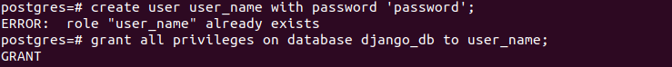

Оркестрация средствами Docker-compose
docker-compose.yml
Для оркестрации создается файл docker-compose.yml, в котором описана работа 4 сервисов.

Dockerfile для запуска клиентской части проекта
Создается аналогичным докерфайлу для бэкенд части. Дополнительно устанавливается компонент слайдера для навигационной панели.
Запуск
Запуск производится через терминал с помощью команды docker-compose up.


Результаты
Серверная часть:
Клиентская часть:

Команды для добавления нового пользователя через терминал: 
Подключение созданного пользователя:

pgAdmin: